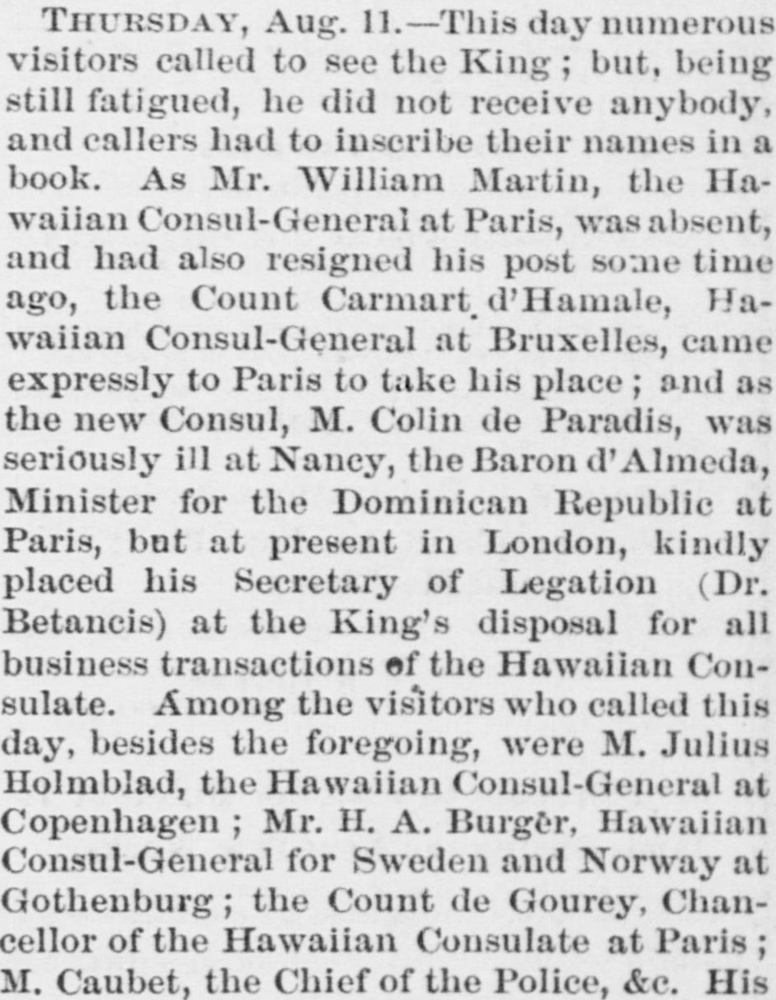
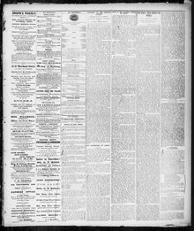

Waiian Consul-General at Paris, was absent, and had also resigned hisEl Cónsul General haitiano en París estaba ausente, y también había renunciado a su puesto
The Pacific Commercial Advertiser. Honolulu, Hawaiian Islands, October 8, 1881. Page 3. Published by H.M. Whitney. A weekly newspaper, 1856–1888.The Pacific Commercial Advertiser. Honolulu, Hawaiian Islands, 8 de octubre de 1881. Página 3. Publicado por H.M. Whitney. Periódico semanal, 1856–1888. View the originalVer el original


See the full pageVer la página completaThe newspaper reported that the Baron d'Almeda, Minister for the Dominican Republic at Paris, kindly placed his Secretary of Legation, Dr. Betancis, at the King's disposal for business transactions concerning the Hawaiian Consulate. This arrangement was made because the Hawaiian Consul-General at Paris was absent and had resigned, the replacement was ill, and another official had traveled from Brussels to cover the post.El diario refirió que el barón de Almeda, ministro de la República Dominicana en París, puso gentilmente a su secretario de legación, el Dr. Betances, a disposición del Soberano para despachar los asuntos relativos al consulado de Hawái. Este arreglo obedeció a que el cónsul general hawaiano en París se hallaba ausente y había dimitido, su sustituto cayó enfermo y otro funcionario debió trasladarse desde Bruselas para atender el consulado.
FULL TEXT:TEXTO COMPLETO:
THE KING'S TOUR ROUND THE WORLD.LA GIRA DEL REY ALREDEDOR DEL MUNDO.
THE KING IN PARIS.EL REY EN PARÍS.
LETTER FROM EUROPE--No. 60.CARTA DESDE EUROPA—No. 60.
THURSDAY, Aug. 11.--This day numerous visitors called to see the King; but, being still fatigued, he did not receive anybody, and callers had to inscribe their names in a book. As Mr. William Martin, the Hawaiian Consul-General at Paris, was absent, and had also resigned his post some time ago, the Count Carmart d'Hamale, Hawaiian Consul-General at Bruxelles, came expressly to Paris to take his place; and as the new Consul, M. Colin de Paradis, was seriously ill at Nancy, the Baron d'Almeda, Minister for the Dominican Republic at Paris, but at present in London, kindly placed his Secretary of Legation (Dr. Betancis) at the King's disposal for all business transactions of the Hawaiian Consulate. Among the visitors who called this day, besides the foregoing, were M. Julius Holmblad, the Hawaiian Consul-General at Copenhagen; Mr. H. A. Burger, Hawaiian Consul-General for Sweden and Norway at Gothenburg; the Count de Gourey, Chancellor of the Hawaiian Consulate at Paris; M. Caubet, the Chief of the Police, &c.JUEVES, 11 de agosto.—Este día numerosos visitantes llamaron para ver al Rey; pero, estando todavía fatigado, no recibió a nadie, y los visitantes tuvieron que inscribir sus nombres en un libro. Como el Sr. William Martin, el Cónsul General hawaiano en París, estaba ausente, y también había renunciado a su puesto hace algún tiempo, el Conde Carmart d'Hamale, Cónsul General hawaiano en Bruxelles, vino expresamente a París para tomar su lugar; y como el nuevo Cónsul, M. Colin de Paradis, estaba gravemente enfermo en Nancy, el Barón d'Almeda, Ministro de la República Dominicana en París, pero en la actualidad en Londres, amablemente puso a su Secretario de Legación (el Dr. Betancis) a disposición del Rey para todas las transacciones de negocios del Consulado hawaiano. Entre los visitantes que llamaron este día, además de los anteriores, estuvieron M. Julius Holmblad, el Cónsul General hawaiano en Copenhague; el Sr. H. A. Burger, Cónsul General hawaiano para Suecia y Noruega en Gotemburgo; el Conde de Gourey, Canciller del Consulado hawaiano en París; M. Caubet, el Jefe de la Policía, etc.
This collection gathers the coverage of the Dominican Republic in the American press, in the order it was published.Esta colección reúne la cobertura de la República Dominicana en la prensa estadounidense, en el orden en que se publicaron.